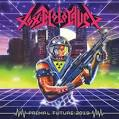

Toxic Holocaust
Biography
A punitive thrash metal project influenced by hardcore punk, west coast hard rock, and proto-death metal bands of the
'80s such as , , and , Toxic Holocaust is largely a one-man operation run by Oregon native . Emerging in the late '90s,
the project eventually expanded into a live entity, and by 2020 the group had issued six well-received full-length albums and multiple EPs.
founded the band in 1999 in the city of Portland. Writing and recording all of the group's music himself, he issued a
pair of demos (1999's Radiation Sickness and 2002's Critical Mass) before unleashing the project's first full-length
effort, Evil Never Dies, in 2003. The group's burgeoning popularity in the metal underground prompted to take the
enterprise out of the studio and onto the stage, so he hired a backing band and hit the road. However, the expanded
version of Toxic Holocaust would not make its way into the studio for album number two. 2005's Hell on Earth once again
saw assume all duties, but he did manage to enlist renowned heavy metal artist Ed Repka (, , etc.) to design the cover.
Extensive touring followed, along with a recording contract with America's premier death metal label, . In addition to
releasing the third Toxic Holocaust album, An Overdose of Death... (2008), reissued Evil Never Dies and Hell on Earth.
The Gravelord EP arrived in 2009, followed in 2011 by the full-length Conjure and Command, which was the first Toxic
Holocaust release to feature a full band, with joined by bass player Phil Zeller and drummer Nick Bellmore. That same
crew stayed aboard for 2013's Chemistry of Consciousness, but would return to the one-man-band setup for 2019's
dystopian technological takeover-themed Primal Future: 2019.
Discography
|
 |
|
|
|
|
|
|
|
|
|
|
| September 2, 2008 |
October 4, 2019 |
October 29, 2013 |
July 19, 2011 |
October 1, 2003 |
October 31, 2005 |
2002 |
2005 |
August 2008 |
2007 |
July 19, 2011 |
March 29, 2013 |
| An Overdose of Death... |
Primal Future: 2019 |
Chemistry of Consciousness |
Conjure and Command |
Evil Never Dies |
Hell on Earth |
Critical Mass |
Blasphemy, Mayhem, War |
Brazilian Slaughter 2006 |
Only Deaf Is Real |
Conjure and Command (Deluxe Version) |
From the Ashes of Nuclear Destruction |
|
|
|
|
|
|
 |
|
|
|
| June 12, 2012 |
November 13, 2004 |
June 11, 2010 |
March 2004 |
July 2004 |
2001 |
February 2006 |
2002 |
January 14, 2008 |
2008 |
| Toxic Waste |
Toxic Thrash Metal |
Toxic Holocaust / Inepsy |
Outbreak of Evil |
Thrashbeast from Hell |
Toxic Holocaust / Oprichniki |
Don't Burn the Witch... |
Implements of Mass Destruction / Nuclear Apocalypse:666 |
Speed n' Spikes Volume 1 |
In the Sign of Sodom - Sodomaniac Tribute |